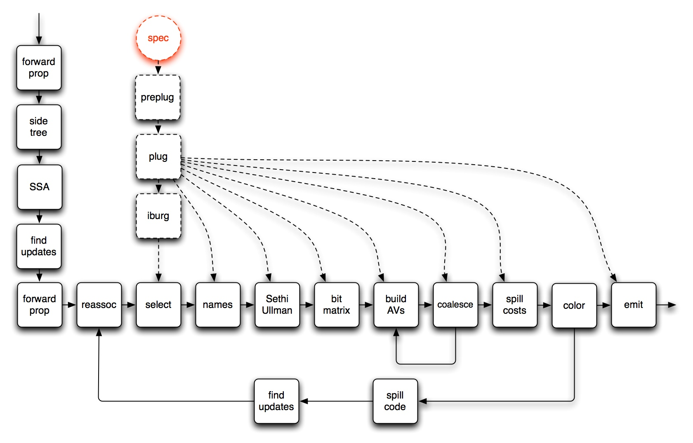

This wiki describes ICG, a new code generator for gcc.
We had a number of new ideas about code generation for CISC machines, like the x86 and x86-64. Our goal was to explore these ideas in the context of GCC. Our initial target was the x86-64, the 64-bit version of the x86 architecture.
ICG produces correct code in most cases, though our level of correctness testing is still minimal. It also produces good code in most cases.

Pretty isn't it? Please see the DescriptionOfTheBigPicture.
Our approach is to hook into gcc at the RTL level. RTL instructions currently roughly match machine instructions. We want the patterns to be as large as possible, to make burg work better. We use the techniques used by combine to pull related RTL insns together into large RTL patterns.
Here's an example, in made up notation. Imagine an RTL tree like this
(set (reg V)
(mult (reg Z)
(plus (reg Y)
(plus (reg X)
(reg W)))))
where everything is 64-bit ints and we're aiming at
an x86-64. Thanks to the miracle of data-flow analysis,
we know that reg W has no more uses (but reg X and reg Y are still live). So the SU numbering
organizes the tree as above and burg figures out that it
would be cool to generate the following sequence
rW += rX rW += rY AX = rW AX *= rZ rV = AXbut it doesn't actually rewriting the tree, 'cause that would be expensive. Instead, when we build the IG, we notice that AX (the hardware register) must interfere with rZ and rW must interfere with rY and rZ. Furthermore, we'd like to coalesce AX with rV and or rW. And there's some other interferences, depending on what's alive across the whole tree.
All normal stuff.
Then we try to allocate. For my example, imagine we have to spill rW and rX. We rewrite the tree to show the loads from the stack frame, then give this tree back to SU numbering, yielding
(set (reg V)
(mult (reg Z)
(plus (load (plus (reg FP)
(const Woffset)))
(plus (load (plus (reg FP)
(const Xoffset)))
(reg Y))))
Notice the SU-numbering has reorganized things so that we can do
the adds directly from memory. Then we redo the burg labelling,
effectively finding the sequence
rT = rY -- because rY is still live rT += Xoffset[FP] rT += Woffset[FP] AX = rT AX *= rZ rV = AXAgain, we note interferences and potential coalesces, and try to color. If we're lucky, we end up with something like
AX += Xoffset[FP] AX += Woffset[FP] AX *= rZOf course, we aren't always be so lucky, but that's ok. The main thing is that the SU-numbering scheduled the evaluation to minimize register usage and the BURG stuff found a minimal instruction sequence, including spill code.
The main benefits arise around spill code. When we spill, we do a better job, so code footprint is smaller and less registers are required, leading to further savings.
All the spill code is inserted in a machine-independent form, extending the expression trees, and is then exposed to burg so that it fits, more-or-less optimally, into the instruction-selection process. An especially good thing for ciscy machines.
By reconsidering instruction selection across the entire expression tree after inserting spill code, we're able to get register usage exactly correct; that is, no temporary registers are allocated where they aren't necessary and no registers need to be reserved, "just in case". This sort of thing is easy to get right on a RISC machine; CISC machines are usually harder.
Finally, assuming it can all be described neatly and cleanly, having a neat and clean description will benefit future maintainers (versus the current, situation where some passes (e.g., reload) are considered so scary that maintainers aren't able to work on them effectively).
The RTL passes of GCC are described here (pre-reload) and here (post-reload).
Part of our scheme is to use an extended form of Sethi-Ullman numbering to schedule evaluation of each RTL tree. See ExtendedSUNumbering.
Burg and iburg share an input language, but the input language isn't really designed for use by humans. Instead, burg was envisioned as a server with some sort of preprocessor. I built such a thing, called plug.
Vijay Menon reminded me that, on the x86-64, it's possible to manipulate bytes in the AH, BH, CH, and DH registers and wondered if I had a plan for them. After some thought, I remembered that I do have a plan; it's right here.